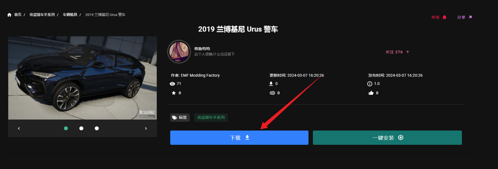

Cherax DLCS 加载教程
Cherax 支持加载自定义 DLC 内容,包括载具和人物模组
下载
小贴士
永远养成一个好习惯:下载任何程序不要下到含 中文/中文符号/奇怪字符 的文件夹中,这可能导致部分程序运行不了;并建议将单个程序/压缩包放入单独的文件夹中,防止部分程序释放出很多闲杂文件或解压出太多文件影响整洁度
下载你喜欢的载具
因做教程,故任一选择一载具进行演示

存放路径
打开菜单目录 路径： 文档 -> Cherax -> DLCs -> 把有文件夹的自定义dlc文件放进去。
将你下载并解压好的载具文件放到存放路径里
如果你不知道哪个是载具文件,打开后是dlc.rpf的代表是正确的DLC文件
![]()
游戏内操作
载具：可以从"生成"→"车辆"→"自定义DLC车辆"生成出来
PED：可以从生成→NPC→Custom DLC peds中生成,或者从玩家→Model Changer→Custom-DLC peds中派生